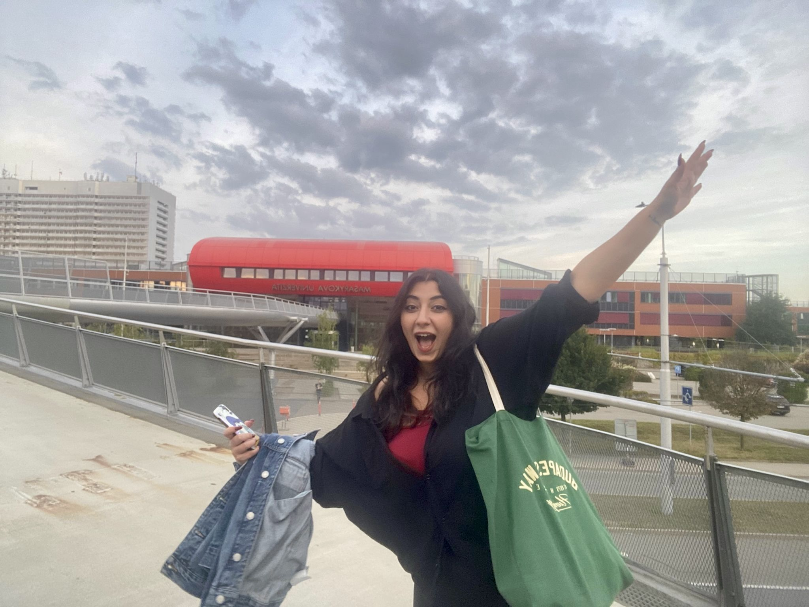

Matematik bölümünde aldığım eğitim bana soyut düşünebilmeyi, analitik bir bakış açısı geliştirmeyi ve bir problemin teorik altyapısına inmeyi öğretti. Aslında her şey, çocukluğumdan beri içimde taşıdığım o uzay ve evren merakıyla başladı. Son bir buçuk yıldır, edindiğim matematiksel birikimi astrofizik dünyasına nasıl entegre edebileceğimi araştırıyorum. Bu arayış beni karadelikler yardımıyla uzay-zaman geometrisinin arka planına yönlendirdi; böylece teorik fizik alanına ilk adımımı attım. Çekya'daki Erasmus sürecimde üzerine çalışmaya başladığım, ancak süre kısıtlılığı nedeniyle henüz tamamlanmamış olan araştırma projem ise bu alana tam anlamıyla dahil olmamı sağladı.
Literatür incelemelerim sırasında özellikle korunan yükler (Conserved Charges) ve pertürbasyon teorisi (Perturbation Theory) gibi konulara ilgi duymaya başladım; bulduğum her akademik seminere katılarak bu alandaki vizyonumu genişlettim. İşin arkasındaki matematiği derinleştirip farklı bir perspektif getirmek isterken, süperintegrallenebilirlik (Superintegrability) üzerine yapılan araştırmalarla karşılaştım. İşte o an taşlar tam olarak yerine oturdu: Cebirsel yöntemler kullanarak ne kadar güçlü fizik yapılabileceğini fark etmek, bağımsız araştırma sürecimde bir dönüm noktası oldu.
Bu motivasyon beni en sonunda Charles Üniversitesi’nden David Kubiznak ve ekibinin yürüttüğü çalışmalara ulaştırdı. Şu sıralar bu alandaki güncel makaleleri yakından inceliyor, cebirsel yöntemlerle evreni anlama tutkumu akademik bir kariyere dönüştürebileceğim fırsatları takip ediyorum.
Temel akademik hedefim, karadelik uzay-zamanlarının saklı simetrilerini (hidden symmetries) ve integral sabitlerini geometrik yöntemlerle inceleyerek genel görelilik ve pertürbasyon teorisi üzerinde derinleşmektir. Bu doğrultuda, eğri uzay-zamanlardaki dalga denklemlerinin ayrıştırılabilirliğini ve korunan niceliklerin cebirsel altyapısını çalışmayı; lisans sonrası süreçte bu araştırmaları uluslararası düzeyde yürüten merkezlerde sürdürerek çalışmalarımı uzun vadede akademi çatısı altında köklü bir kariyere dönüştürmeyi amaçlıyorum.
| Sınav / Kriter | Sonuç / Puan |
|---|---|
| Güncel GPA (Lisans Ortalama) | 2.46 / 4.00 |
| IELTS Academic | .../9.0 |
| ALES (Sayısal) | ... |
| ODTÜ İngilizce Yeterlilik (Dil Puanı) | ... |

Masaryk Üniversitesi Kampüsü, Brno
Çekya'nin Brno şehrinde, Masaryk Üniversitesi'nde geçirdiğim Erasmus+ dönemi, hayatımın hem kişisel hem de akademik anlamda en önemli dönüm noktalarından biri oldu. Bu süreç bana sadece farklı bir kültürde bağımsız bir yaşam deneyimi sunmakla kalmadı; aynı zamanda uluslararası bir akademik ortamda kendi araştırma projemi başlatma, farklı coğrafyalardaki matematik ekollerini ve bilimsel bakış açılarını yerinde gözlemleme fırsatı verdi.
Araştırma Projesi: Conformal Compactification and Penrose Diagram of the Schwarzschild Spacetime
Bu çalışma, teorik fiziğe adım atarken yürüttüğüm ilk bağımsız projemdi. Çalışma kapsamında, Schwarzschild karadelik uzay-zamanının nedensel yapısını diferansiyel geometrik metotlar yardımıyla inceledim. Lorentzian manifoldlarında konform kompaktlaştırma (conformal compactification) tekniklerini uygulayarak, sonsuz uzay-zaman sınırlarını sonlu bir Penrose diyagramı üzerinde haritalandırma üzerine odaklandım. Süre kısıtlılığı nedeniyle üzerinde çalışmaya devam ettiğim bu süreç; literatür tarama, tensör analizleri yapma ve teorik fiziğin geometrik altyapısını kavrama konusunda son derece öğretici bir deneyim oldu ve akademik araştırmalara güçlü bir giriş yapmamı sağladı.
Sosyal açıdan ise Avrupa'nın merkezinde, Brno'da yaşamak harika bir deneyimdi. Dünyanın dört bir yanından gelen insanlarla çok kültürlü bir ortamı paylaştım ve güzel arkadaşlıklar edindim. Bu süreçte hem Çek kültürünü ve dilini öğrenmeye çalıştım hem de Avrupa'da pek çok farklı yer görme fırsatı buldum; öyle ki Çekya benim için gerçekten ikinci bir ev gibi oldu. Akademik olarak da bilimsel tartışmaların ve yeni fikirlerin sadece dersliklerde değil, seyahatlerde ya da bir kahve masasında da gelişebildiğini yaşayarak görmüş oldum.
Lisans eğitimim boyunca aldığım tüm teorik matematik ve ileri düzey analiz derslerinin detaylı içeriklerine, kredilerine ve dönemlik müfredat yapısına Ankara Üniversitesi Ders Bilgi Paketi üzerinden doğrudan ulaşabilirsiniz: